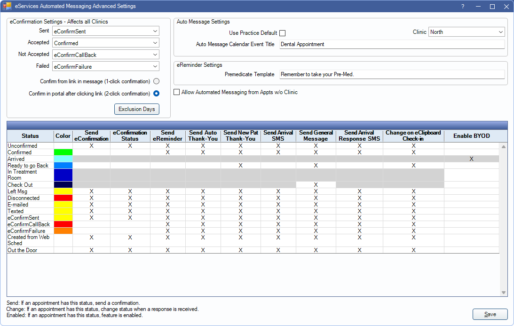

Automated Messaging Advanced Settings
The Automated Messaging Advanced Settings houses settings regarding multiple automated messaging features.
In Automated Messaging, click Advanced Settings.
Alternatively, in the eClipboard Setup window, click Confirmation Statuses.
eConfirmation Settings
eConfirmation Settings are specific to the eConfirmation feature.

Each time an eConfirmation is sent, the appointment's confirmation status can also update automatically. Set the default status to apply for each circumstance:
- Sent: The status applied when an eConfirmation is sent. Note: If more than one eConfirmation rule is set up, do not select a default status that is set to exclude when sending for eConfirmations.
- Accepted: The status applied when a patient confirms the appointment (via the URL link or confirmation code).
- Not Accepted: The status applied when a patient replies Request Phone Call on the URL link. When a patient requests a call back, an Alert also notifies staff.
- Failed: The status applied when the patient's wireless number or email is in a correct format (example: 503-555-1234, email@email.com) but the number or email is not valid. A failure does not occur if the wireless phone or email are left blank.
1-click vs 2-click confirmation: These settings determine whether the patient clicks on the confirmation link once or twice to confirm the appointment.
- Confirm from link in message (1-click confirmation): When the patient clicks on the link in the eConfirmation message, the appointment is immediately confirmed.
- Confirm in portal after clicking link (2-click confirmation): This is the default setting. When patient clicks the link in the eConfirmation message, the confirmation portal opens with a list of choices. Patient can opt to confirm or request a callback.
Exclusion Days: Click to open eConfirmation and Web Sched Recall Exclusion Days.
Auto Message Settings
This area is disabled when eConfirmations, eReminders, and Auto Thank-Yous are not enabled.
When an Automated Thank-You message, eReminder, or eConfirmation is sent to a patient, and the [AddToCalendar] tag is included in the message, the patient can opt to save the appointment to the calendar on their device.

Use Practice Default: Only available when using clinics and a clinic other than Headquarters is selected. Check to use the Headquarters Auto Message Calendar Event Title for this clinic.
Clinic: Only available when Clinics are enabled. Choose a clinic from the dropdown to edit the Auto Message Settings for the specific Clinic. Choose Headquarters to edit the practice default settings.
Auto Message Calendar Event Title: The title of the event saved to the patient's calendar. Text field is disabled when Use Practice Default is checked; it must be edited when Headquarters is selected instead.
eReminder Settings

Premedicate Template: The sentence sent for eReminders that include the [Premed] tag. The [Premed] tag only sends for patients marked as Premedicate in the Medical area.
Miscellaneous Settings
Allow Automated Messaging from Appts w/o Clinic: This option applies to eReminders, eConfirmations, Automated Thank-You messages, and General Messages when the clinic on an appointment is set to none.
- Checked: Messages are sent to all appointments, even if no clinic is assigned.
- Unchecked: Appointments with no clinic are not sent a message.
Confirmation Statuses
Determine if automated messages are sent for appointments with a specific appointment confirmation status. Many of these settings can also be set in Definitions: Appt Confirmed.

Single-click into the grid to determine which statuses do and don't send a message.
- Color: Displays the color associated with the status.
- Send eConfirmation: Send eConfirmations for appointments with this status.
- Change eConfirmation Status: Appointments with this status have the status updated when the patient confirms the appointment.
- Send eReminder: Send eReminders for appointments with this confirmation status.
- Send Auto Thank-You: Send Thank-You messages for appointments with this confirmation status.
- Send New Pat Thank-You: Send New Patient Thank-You messages for appointments with this confirmation status.
- Send Arrival SMS: Send Arrivals for appointments with this confirmation status.
- Send General Message: Send general messages for appointments with this confirmation status after it has been set complete.
- Send Arrival Response SMS: Appointments with this status have the status updated if an arrival is responded to.
- Change on eClipboard Check-in: Appointments with this status are updated to the Time Arrived trigger appointment status set in Preferences when the patient patient checks in via eClipboard.
- Enable BYOD: Appointments with this status allow BYOD text messages to be sent when right-clicking the appointment.